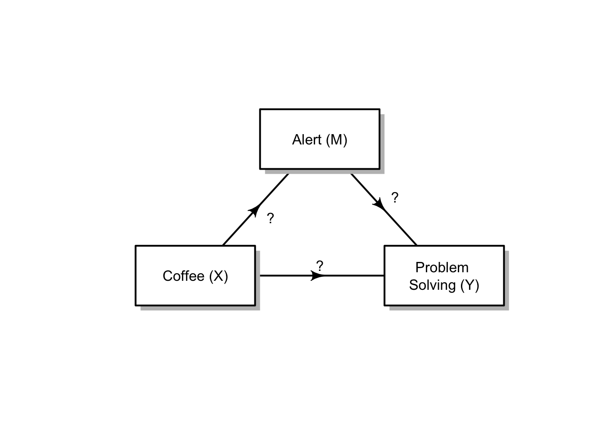

data <- c(0, "a", 0,
0, 0, 0,
"b", "c", 0)
M<- matrix (nrow=3, ncol=3, byrow = TRUE, data=data)
plot<- plotmat (M, pos=c(1,2),
name= c( "M",
"Coffee (X)",
"Problem \nSolving (Y)"),
box.type = "rect",
box.size = 0.12,
box.prop=0.5,
curve=0)Multiple_Regression_Mediation_Student
Mediation analysis
In this demonstration, we will model a mediation analysis. The total effect of an unmediated relationship is below in pathway c.
We are going to test for the mediator variable of Alertness (M) on Coffee’s (X) performance on Problem Solving (Y). (This needs the prime mark added to the direct pathway “c” text!)
data <- c(0, "a", 0,
0, 0, 0,
"b", "`c (direct effect)`", 0)
M<- matrix (nrow=3, ncol=3, byrow = TRUE, data=data)
plot<- plotmat (M, pos=c(1,2),
name= c( "Alertness (M)",
"Coffee (X)",
"Problem \nSolving (Y)"),
box.type = "rect",
box.size = 0.12,
box.prop=0.5,
curve=0)Read in the data
library(readr)
d <- read_csv("Coffee_Mediation_1.csv")Rows: 38 Columns: 3
── Column specification ────────────────────────────────────────────────────────
Delimiter: ","
dbl (3): Coffee, Alert, Prob_Solve
ℹ Use `spec()` to retrieve the full column specification for this data.
ℹ Specify the column types or set `show_col_types = FALSE` to quiet this message.head(d)# A tibble: 6 × 3
Coffee Alert Prob_Solve
<dbl> <dbl> <dbl>
1 0 9 45
2 1 15 57
3 0 10 45
4 2 16 51
5 4 10 65
6 4 20 88summary(d) Coffee Alert Prob_Solve
Min. :0.000 Min. : 6.00 Min. :37.00
1st Qu.:1.000 1st Qu.:10.25 1st Qu.:51.00
Median :2.000 Median :15.00 Median :59.50
Mean :2.053 Mean :14.16 Mean :62.95
3rd Qu.:3.000 3rd Qu.:18.75 3rd Qu.:70.50
Max. :4.000 Max. :20.00 Max. :97.00 I am going to copy and rename the variables to save on typing
X = Coffee, Y = Prob_Solve, M = Alert
d <- d %>%
mutate(X = Coffee,
Y = Prob_Solve,
M = Alert)Longhand - Steps of Baron & Kenny (1986)
Four independent linear regression models
- The effect of X on Y (total effect = pathway c) = a simple linear regression model
- The effect of X on M (indirect effect pathway a) = a simple linear regression model
- The effect of M on Y (indirect effect pathway b) while controlling for X = a multiple linear regression model
- The effect of X and M on Y (for direct effect estimation = pathway c’) = the same multiple linear regression model
When running your models, you need to assign them to objects in the environment to then be able to use them in a call to the mediation package.
Run the code for the mediation analysis and interpret the results at each step.
Step 1: Test the total effect - pathway c
\[ Y = b_0 + b_1 * X + e \]
Construct a simple regression model for X predicting Y
(mod_totaleffect <- summary(lm(Y ~ X, d)))
Call:
lm(formula = Y ~ X, data = d)
Residuals:
Min 1Q Median 3Q Max
-27.676 -11.625 -0.619 10.398 34.370
Coefficients:
Estimate Std. Error t value Pr(>|t|)
(Intercept) 50.585 4.134 12.238 2.17e-14 ***
X 6.023 1.659 3.631 0.000871 ***
---
Signif. codes: 0 '***' 0.001 '**' 0.01 '*' 0.05 '.' 0.1 ' ' 1
Residual standard error: 14.45 on 36 degrees of freedom
Multiple R-squared: 0.2681, Adjusted R-squared: 0.2477
F-statistic: 13.19 on 1 and 36 DF, p-value: 0.0008708Write a short paragraph describing the model findings (about 2 or three sentences):
- Describe the relationship between X and Y in terms of significance
- Describe the magnitude of the effect of X on Y
Step 2: Simple Regression Model to test the a pathway of the indirect effect
\[ M = b_0 + b_1 * X + e \] #### Construct a simple regression model for X predicting M
(mod_a <- summary(lm(M ~ X, d)))
Call:
lm(formula = M ~ X, data = d)
Residuals:
Min 1Q Median 3Q Max
-6.6644 -2.8031 -0.2337 3.3356 7.4840
Coefficients:
Estimate Std. Error t value Pr(>|t|)
(Intercept) 11.5160 1.1356 10.141 4.27e-12 ***
X 1.2871 0.4557 2.825 0.00767 **
---
Signif. codes: 0 '***' 0.001 '**' 0.01 '*' 0.05 '.' 0.1 ' ' 1
Residual standard error: 3.97 on 36 degrees of freedom
Multiple R-squared: 0.1814, Adjusted R-squared: 0.1587
F-statistic: 7.978 on 1 and 36 DF, p-value: 0.007671Write a short paragraph describing the model findings (about 2 or three sentences):
- Describe the relationship between X and M in terms of significance
- Describe the magnitude of the effect of X on M
- Does X predict M - include a sentence that indicates whether or not the relationship between X and M allows for M to act as a mediator, given the additional assumptions about mediation analysis.
Step 3 & 4: Construct a multiple regression to test the b pathway of the indirect effect & the direct effect (pathway c’)
\[ Y = b_0 + b_1 * X + b_2 * M + e \]
(mod_b <- summary(lm(Y ~ X + M, d)))
Call:
lm(formula = Y ~ X + M, data = d)
Residuals:
Min 1Q Median 3Q Max
-20.647 -12.741 -0.009 8.407 33.241
Coefficients:
Estimate Std. Error t value Pr(>|t|)
(Intercept) 36.2948 7.7396 4.689 4.08e-05 ***
X 4.4258 1.7479 2.532 0.0160 *
M 1.2409 0.5784 2.145 0.0389 *
---
Signif. codes: 0 '***' 0.001 '**' 0.01 '*' 0.05 '.' 0.1 ' ' 1
Residual standard error: 13.78 on 35 degrees of freedom
Multiple R-squared: 0.3531, Adjusted R-squared: 0.3162
F-statistic: 9.553 on 2 and 35 DF, p-value: 0.000489Write a short paragraph describing the model findings (about three or four sentences):
- Describe the relationship between M and Y in terms of significance
- Describe the magnitude of the effect of M on Y
- Describe the new relationship of X on Y and compare it to the model of total effect
- Describe whether and what type of mediation effect is present between the three variables
Using the power of R and the mediation package
The mediation package is loaded at the top of the document. It takes the models for pathways a and b, and it needs us to tell it the name of the predictor or treatment variable (X) and the name of the mediator variable (M) and we set the boot argument to T for TRUE, to be able to generate confidence intervals on our co-efficients. Refer to the lecture model for code if you are unsure.
results <- mediate(mod_a, mod_b, treat = 'X', mediator = 'M', boot = T, dropobs = TRUE)Running nonparametric bootstraprun a summary of the results:
summary(results)
Causal Mediation Analysis
Nonparametric Bootstrap Confidence Intervals with the Percentile Method
Estimate 95% CI Lower 95% CI Upper p-value
ACME 1.5971 0.1541 3.88 0.014 *
ADE 4.4258 1.4267 7.77 0.010 **
Total Effect 6.0229 3.1421 9.35 <2e-16 ***
Prop. Mediated 0.2652 0.0338 0.62 0.014 *
---
Signif. codes: 0 '***' 0.001 '**' 0.01 '*' 0.05 '.' 0.1 ' ' 1
Sample Size Used: 38
Simulations: 1000 - ACME stands for average causal mediation effects and is the product of pathway a (X = ) and pathway b (M = ).
- ADE stands for average direct effects or pathway c’. This is the X coefficient in our pathway b model
- Total Effect does what it says on the tin. It is the sum of the direct and indirect effect, ACME + ADE, and also calculated as X in our total effect model
- Prop. Mediated is the proportion of the effect of X on Y that goes through M. We divide ACME (or ab) by the total effect (c).
Drawing the diagram from the top of the document:
In the chunk below, follow the instructions to change a part of the code to reflect our mediation relationship.
In the command to data,
- remove the quotation marks, back ticks and question marks,
- put in the correct coefficients to reflect the indirect a, indirect b and direct pathways,
- make sure that you have a comma after each changed part of code
data <- c(0, "`?`", 0,
0, 0, 0,
"`?`", "`?`", 0)
M <- matrix (nrow=3, ncol=3, byrow = TRUE, data=data)
plot<- plotmat (M, pos=c(1,2),
name= c( "Alert (M)",
"Coffee (X)",
"Problem \nSolving (Y)"),
box.type = "rect",
box.size = 0.12,
box.prop=0.5,
curve=0)
Reporting the mediation analysis
Write a results paragraph reporting the mediation effect: Use the lecture example as a model. It should describe the mediation effect and also report your use of a bootstrapping procedure.
How are we doing with our list now, with one half of a lecture to go!!
- a model with some significant predictors! - done
- correlation matrices - next week
- centering predictors - done
- standardising predictors - done
- models with categorical predictors - done & ongoing
- interpreting models with categorical predictors - done & ongoing
- models with interaction terms - done & ongoing
- the properties of multicollinearity - next week
- choosing between different models - done
- reporting models - ongoing